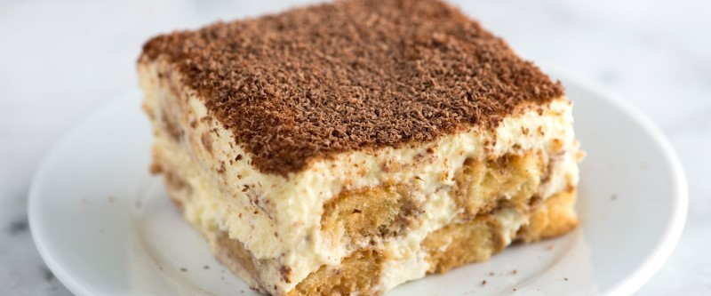

Тирамису

- TODO
Сварить 500 мл. крепкого кофе, процедить и поставить остужаться. 4 желтка и 100 гр. сахарной пудры с ванилином хорошенько взбить миксером в высокой посуде. Вмешать постепенно 500 гр. маскарпоне. В отдельной посуде взбить 4 белка со щепоткой соли до стоячих пиков. Ввести белки частями в желтковую массу вымешивая лопаткой движениями сверху вниз. Крем готов.
В остывший кофе добавить 8 ст.л. ликера или рома. Бисквитное печенье (пятнашки) обмакивать в кофе, выкладывать слоем в форму, затем слой крема, потом опять печенье и крем. Сверху украсить тертым шоколадом.
 Назад к списку рецептов
Назад к списку рецептов